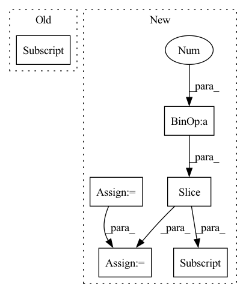

Pattern ID :1330
Before Change
x = self.net[idx](x)
stacked.append(x)
output = torch.cat(stacked[1:] , dim=1)
return output
After Change
x = self.net[idx](x)
x_residual = x_residual + x
in_channels = growth_rate[idx]
stacked_channels = sum(growth_rate[idx+1:] )
sections = [in_channels, stacked_channels]
if idx != num_blocks - 1:
x, x_residual = torch.split(x_residual, sections, dim=1)In pattern: SUPERPATTERN
Frequency: 3
Non-data size: 6
Instances Fragment ID: 3887258
Project Name: tky823/dnn-based_source_separation
Commit Name: 8fb5cd5f4f8b4a435d058aef6204904f657abea0
Time: 2021-06-06
Author: 40362510+tky823@users.noreply.github.com
File Name: src/models/d3net.py
M Class Name: D3Block
N Class Name: D3Block
M Method Name: forward(2)
N Method Name: forward(2)
M Parent Class: nn.Module
N Parent Class: nn.Module
M File Name: src/models/d3net.py
N File Name: src/models/d3net.py
M Start Line: 357
M End Line: 367
N Start Line: 414
N End Line: 430
Before Change
x = self.net[idx](x)
stacked.append(x)
output = torch.cat(stacked[1:] , dim=1)
return output
After Change
x = self.net[idx](x)
x_residual = x_residual + x
in_channels = growth_rate[idx]
stacked_channels = sum(growth_rate[idx+1:] )
sections = [in_channels, stacked_channels]
if idx != depth - 1:
x, x_residual = torch.split(x_residual, sections, dim=1) Fragment ID: 3887261
Project Name: tky823/dnn-based_source_separation
Commit Name: 8fb5cd5f4f8b4a435d058aef6204904f657abea0
Time: 2021-06-06
Author: 40362510+tky823@users.noreply.github.com
File Name: src/models/d2net.py
M Class Name: D2Block
N Class Name: D2Block
M Method Name: forward(2)
N Method Name: forward(2)
M Parent Class: nn.Module
N Parent Class: nn.Module
M File Name: src/models/d2net.py
N File Name: src/models/d2net.py
M Start Line: 51
M End Line: 62
N Start Line: 51
N End Line: 67
Before Change
// get labels for input patches that were masked
bool_mask = mask == True
labels = input[bool_mask]
// get generator output and get mpp loss
cls_logits = self.transformer(masked_input, mpp=True, **kwargs)
logits = cls_logits[:,1:,:]After Change
// add cls token to input sequence
b, n, _ = masked_input.shape
cls_tokens = repeat(self.transformer.cls_token, "() n d -> b n d", b = b)
masked_input = torch.cat((cls_tokens, masked_input), dim=1)
// add positional embeddings to input
masked_input += self.transformer.pos_embedding[:, :(n + 1)]
masked_input = self.transformer.dropout(masked_input)
// get generator output and get mpp loss
masked_input = self.transformer.transformer(masked_input, **kwargs) Fragment ID: 3887255
Project Name: lucidrains/vit-pytorch
Commit Name: be5d560821bb5ae4dff823272118eea4a5dc7d07
Time: 2021-02-12
Author: zackankner@gmail.com
File Name: vit_pytorch/mpp_pytorch.py
M Class Name: MPP
N Class Name: MPP
M Method Name: forward(2)
N Method Name: forward(2)
M Parent Class: nn.Module
N Parent Class: nn.Module
M File Name: vit_pytorch/mpp_pytorch.py
N File Name: vit_pytorch/mpp_pytorch.py
M Start Line: 83
M End Line: 109
N Start Line: 112
N End Line: 128